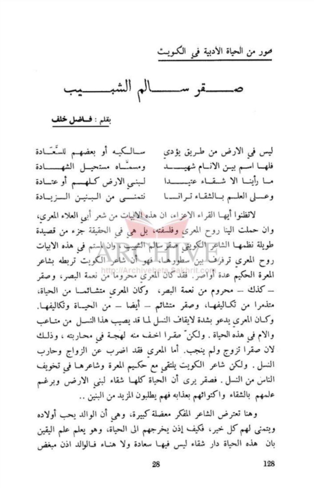
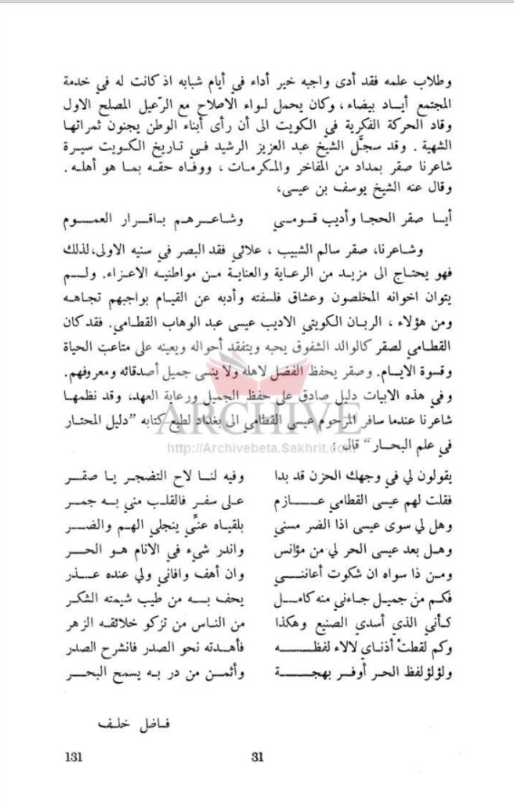

Article date not shown; written after Eissa’s death in 1929, while the poet was living · Article by Fadhel Khalaf, «Suwar min Al-Hayat Al-Adabiya fil-Kuwait: Saqr Salem Al-Shabib», pages 28 and 31 (128 and 131)
The blind poet Saqr Al-Shabib and Eissa Abdulwahab Al-Qatami
What it is
A portrait of the Kuwaiti poet Saqr Salem Al-Shabib, who lost his sight in his early years. Page 31 says that among those who cared for him was «the Kuwaiti captain and man of letters Eissa Abdulwahab Al-Qatami. Al-Qatami was like a loving father to Saqr, who loved him and looked after his affairs and helped him with the hardships of life». It then prints the poem Saqr composed «when the late Eissa Al-Qatami travelled to Baghdad to print his book Dalil Al-Muhtar fi Ilm Al-Bihar», which begins: «They tell me grief has shown in your face, and in it we see unease, O Saqr; I told them Eissa Al-Qatami is set on a journey, and my heart burns with it».
Why it matters
Records Eissa’s care for the poet Saqr Al-Shabib, and the poem written on his journey to Baghdad to print Dalil Al-Muhtar.
Page copies


Others named
Sources
Fadhel Khalaf, «Suwar min Al-Hayat Al-Adabiya fil-Kuwait: Saqr Salem Al-Shabib», pages 28 to 31 (128 to 131); the pages are from the Sakhrit magazine archive
How this text was made: Pages 29 and 30 are about the poet’s philosophy and do not mention the family, so they are not included. The name of the magazine is not shown on these pages.
Open in the interactive site